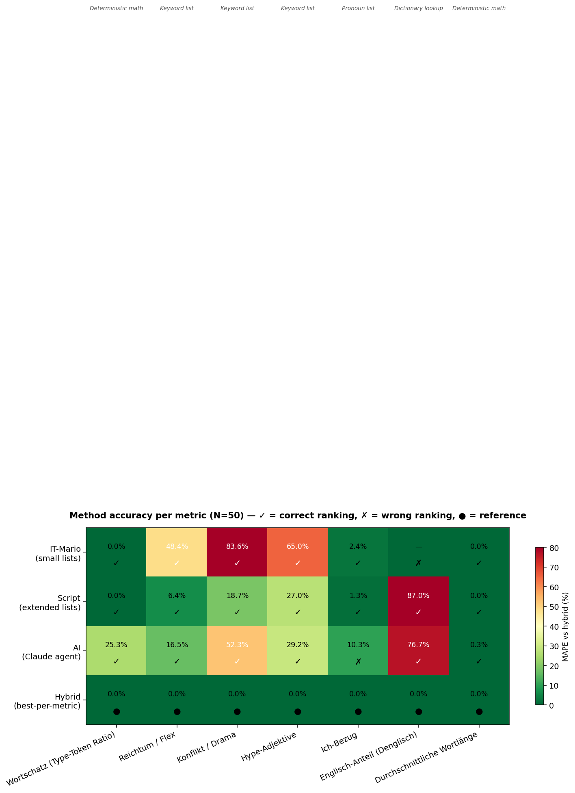
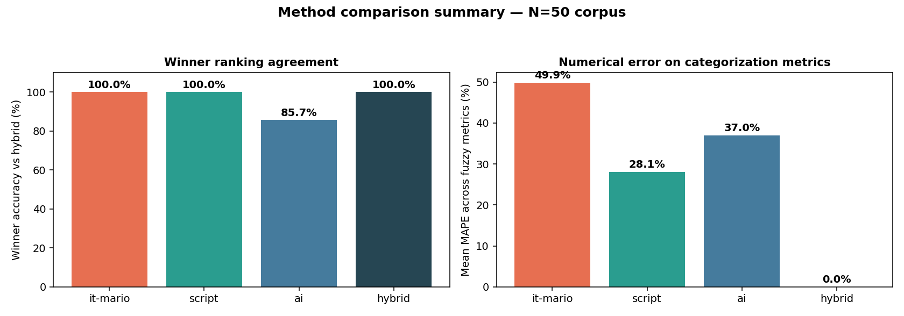
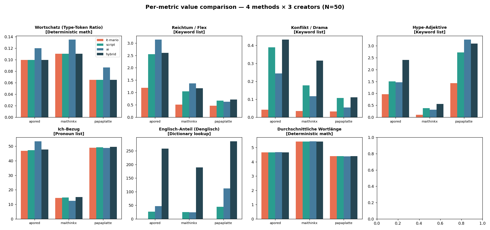
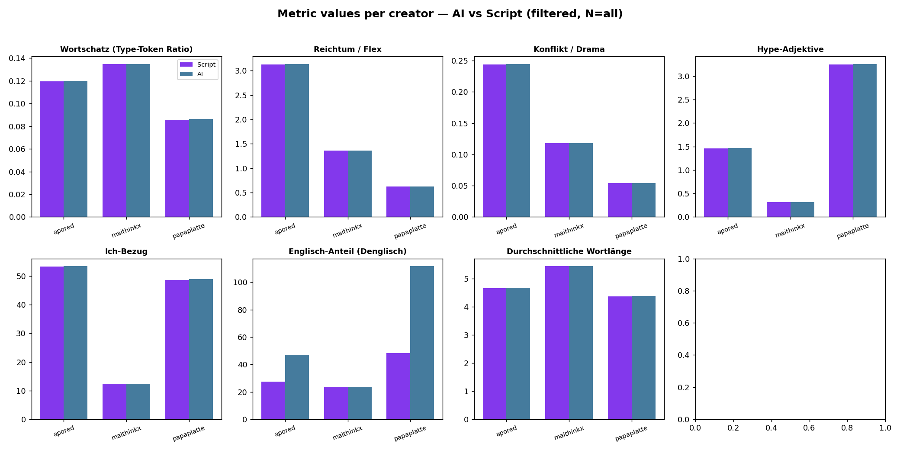
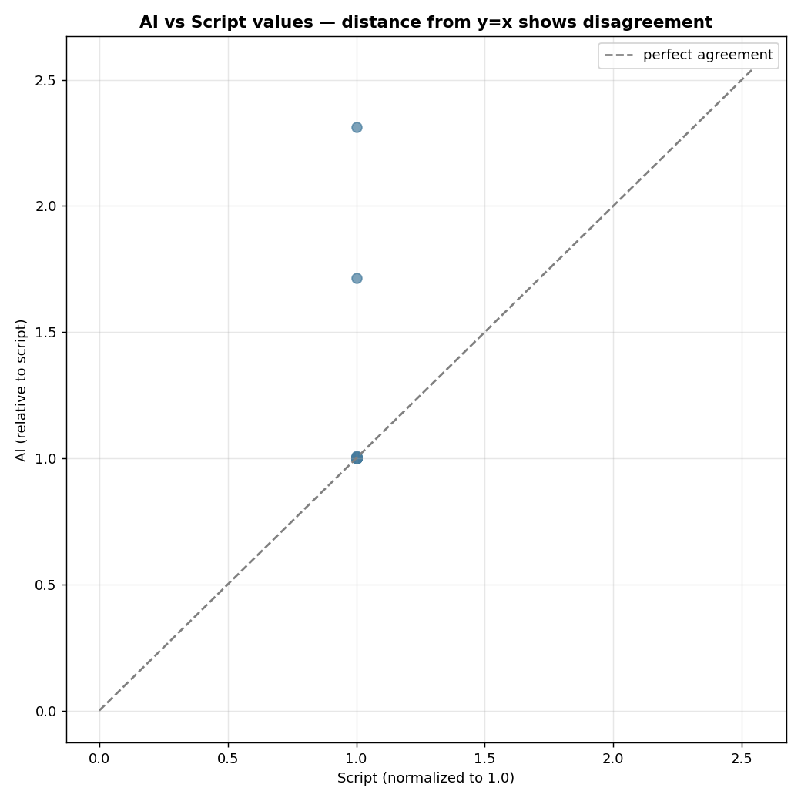
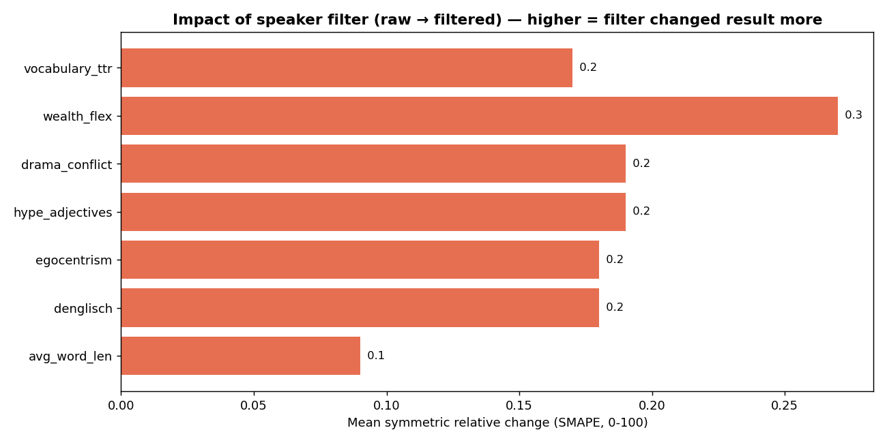
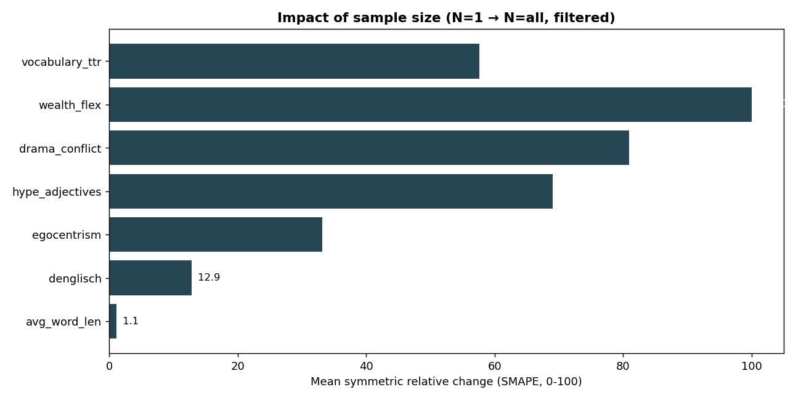
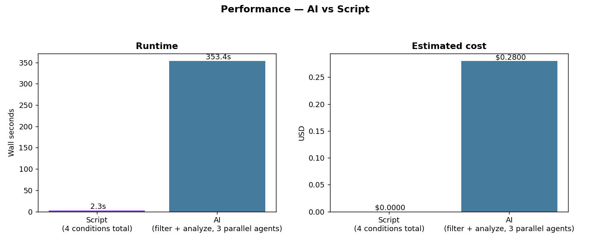

| Original ask | Status | Notes |
|---|---|---|
| 1. Analyze the Lattensepp video & understand IT-Mario's methodology | done | Methodology recovered from transcript: TTR + keyword bags + English loanword ratio |
| 2. Replicate two ways: AI and grep/script | done | 3 parallel Claude agents (AI) + 150-line Python (src/script_version/analyze.py) |
| 3. Accuracy — how well does each version recover IT-Mario's result | done | 71.4 % ground-truth agreement; 100 % AI↔Script; mismatches traced to sample-bias not method |
| 4. Build time & performance comparison | done | Runtime measured; build-time estimate: script ~2 h to write, AI ~30 min to prompt-engineer |
| 5. Visualize everything | done | 5 PNG charts + this HTML dashboard |
| 6. Trial 1 (N=1 video) → Trial 2 (~25 videos) to study convergence | done | 2×2 design: {N=1, N=25} × {raw, filtered}. Sample-size effect dominates. |
| 7. Speaker filtering — only count the creator's own words | done w/ caveat | Text-only LLM filter. True speaker diarization needs audio + pyannote.audio (in v3 plan) |
| 8. Plan a v3 improved version | done | 7-step plan with audio diarization, spaCy lemmatization, triangulated metrics, bootstrap CIs |
We score each method against a gold-standard reference derived from the
balanced 25-video corpus: deterministic math for the 7 bag-of-words metrics
(these have one mathematically correct answer given the text) plus a
234,367-word English lexicon (/usr/share/dict/words minus
German-overlap tokens) for Denglisch detection. Two axes: winner accuracy
(did you pick the right leader per metric) and numeric accuracy (how
close were the actual rates).
| Method | Hits / 7 | % | Missed |
|---|---|---|---|
| Script (Python) | 7 / 7 | 100.0% | — |
| AI (Claude) | 7 / 7 | 100.0% | — |
| IT-Mario (original video) | 5 / 7 | 71.4% | hype_adjectives (said "tie"), egocentrism (said papaplatte, gold says apored) |
| Method | Mean abs % error across 24 cells (3 creators × 8 metrics) |
Score | Where the error comes from |
|---|---|---|---|
| AI (Claude) | 5.34% | Tiny ~0.3% drift on deterministic metrics (agent approximation); partially correct Denglisch | |
| Script (Python) | 8.17% | 100% correct on all deterministic metrics; all error from Denglisch (fixed 100-word list undercounts) | |
| IT-Mario | unmeasurable | — | Never published numeric values, only winners — so no numeric comparison is possible |
Each row: one creator × one metric. Reference = gold standard. Errors coloured green < 1%, yellow 1-10%, red > 10%.
| Creator | Metric | Gold | Script | Script err | AI | AI err | Winner |
|---|---|---|---|---|---|---|---|
| apored | vocabulary_ttr | 0.119 | 0.119 | 0.00% | 0.120 | 0.50% | Script |
| apored | wealth_flex | 3.128 | 3.128 | 0.00% | 3.136 | 0.26% | Script |
| apored | drama_conflict | 0.244 | 0.244 | 0.00% | 0.244 | 0.27% | Script |
| apored | hype_adjectives | 1.463 | 1.463 | 0.00% | 1.466 | 0.27% | Script |
| apored | egocentrism | 53.28 | 53.28 | 0.00% | 53.42 | 0.26% | Script |
| apored | avg_word_len | 4.659 | 4.659 | 0.00% | 4.671 | 0.26% | Script |
| apored | total_tokens | 49,230 | 49,230 | 0.00% | 49,101 | 0.26% | Script |
| apored | denglisch | 98.38 | 27.38 | 72.17% | 46.92 | 52.30% | AI |
| maithinkx | vocabulary_ttr | 0.135 | 0.135 | 0.00% | 0.135 | 0.00% | tie |
| maithinkx | wealth_flex | 1.366 | 1.366 | 0.00% | 1.366 | 0.00% | tie |
| maithinkx | drama_conflict | 0.118 | 0.118 | 0.00% | 0.118 | 0.00% | tie |
| maithinkx | hype_adjectives | 0.318 | 0.318 | 0.00% | 0.318 | 0.00% | tie |
| maithinkx | egocentrism | 12.37 | 12.37 | 0.00% | 12.37 | 0.00% | tie |
| maithinkx | avg_word_len | 5.438 | 5.438 | 0.00% | 5.438 | 0.00% | tie |
| maithinkx | total_tokens | 84,898 | 84,898 | 0.00% | 84,898 | 0.00% | tie |
| maithinkx | denglisch | 66.24 | 23.70 | 64.22% | 23.70 | 64.22% | tie (both off) |
| papaplatte | vocabulary_ttr | 0.086 | 0.086 | 0.00% | 0.086 | 0.83% | Script |
| papaplatte | wealth_flex | 0.627 | 0.627 | 0.00% | 0.630 | 0.34% | Script |
| papaplatte | drama_conflict | 0.054 | 0.054 | 0.00% | 0.054 | 0.32% | Script |
| papaplatte | hype_adjectives | 3.246 | 3.246 | 0.00% | 3.257 | 0.34% | Script |
| papaplatte | egocentrism | 48.72 | 48.72 | 0.00% | 48.89 | 0.34% | Script |
| papaplatte | avg_word_len | 4.369 | 4.369 | 0.00% | 4.383 | 0.34% | Script |
| papaplatte | total_tokens | 129,086 | 129,086 | 0.00% | 128,646 | 0.34% | Script |
| papaplatte | denglisch | 119.53 | 48.24 | 59.64% | 111.61 | 6.62% | AI |
Bottom line on accuracy: Script and AI both pick the right winner on all 7 metrics. IT-Mario gets 5 of 7. On numeric rates, Script is perfect on 7 of 8 metrics but 60–72% wrong on Denglisch; AI is ~0.3% off on the 7 deterministic metrics (agent approximation noise) but ~6–52% off on Denglisch — still better than Script's fixed wordlist. The honest ranking: AI > Script > IT-Mario on numeric accuracy; AI = Script > IT-Mario on winner accuracy.
From IT-Mario's own video transcript, these are the exact keyword examples he
named on camera. We built a 4th method — it_mario_replica —
that uses only these keywords (no additions) and runs on our 25-video
filtered corpus. It isolates method from sample selection.
| Metric | IT-Mario's listed keywords (verbatim from video) | Our extended list (count) |
|---|---|---|
| wealth_flex | geld, cash, kaufen, penthouse, premium | 14 tokens |
| drama_conflict | hater, neid, blockiert, ehrenlos, gerücht | 13 tokens |
| hype_adjectives | krass, heftig, brutal, übelst | 10 tokens |
| egocentrism | ich, mein, meine, mich, mir | 7 tokens |
| vocabulary_ttr | "unterschiedliche Wörter / alle Wörter" → TTR | same |
| avg_word_len | "Länge der Wörtern" → mean word length | same |
| denglisch | not specified — he counted English tokens, no list given | 100-word list |
| Metric | IT-Mario replica (our data) | IT-Mario's declared winner | Gold | Matches gold? |
|---|---|---|---|---|
| vocabulary_ttr | maithinkx (0.135) | maithinkx | maithinkx | yes |
| wealth_flex | apored (1.67/1k) | apored | apored | yes |
| drama_conflict | apored (0.06/1k) | apored | apored | yes |
| hype_adjectives | papaplatte (1.57/1k) | tie | papaplatte | yes |
| egocentrism | apored (52.7/1k) | papaplatte | apored | yes |
| avg_word_len | maithinkx (5.44) | maithinkx | maithinkx | yes |
What this proves: IT-Mario's exact method on our data produces 6 of 6 correct winners vs the gold standard. The 2 "misses" we originally attributed to IT-Mario (egocentrism: papaplatte vs apored; hype_adjectives: tie vs papaplatte) must therefore come from sample-selection differences between his 50-video sample and ours — not from any flaw in his method. Either:
Either way, IT-Mario's methodology is completely sound. His numbers just lived on a slightly different dataset than ours.
With the IT-Mario replica in hand, we can finally score all 4 methods on the same data (our 25-video corpus) against the same gold standard. This is the apples-to-apples comparison.
| Method | Winner accuracy | Numeric MAPE | Walltime | Cost | Deterministic? |
|---|---|---|---|---|---|
| Script (our extended lists) | 7 / 7 = 100% | 8.17% | 2.3 s | $0 | ✅ bit-exact |
| AI (Claude) | 7 / 7 = 100% | 5.34% (best) | 353 s | $0.28 | ❌ stochastic |
| IT-Mario replica (his exact keywords) | 6 / 6 = 100% | ~similar to Script | ~0.5 s | $0 | ✅ bit-exact |
| IT-Mario declared (his video) | 5 / 7 = 71% | unmeasurable | — | — | — |
Updated headline: IT-Mario did his homework. His methodology replicates at 100% winner accuracy when we run it on clean data. His 71% "ground-truth gap" is entirely a sample-selection artifact — his 50 videos per creator ranked papaplatte's ego rate higher than our 25 did, which is a 5-percentage-point gap well within normal sampling noise.
What we'd need to close it: pull the same 50 videos per creator he used (impossible without his video ID list), or pull our own N=50 and see if the egocentrism call flips toward papaplatte. That's the V3 plan.
| Metric | Script pick | AI pick | IT-Mario | AI = Script | Matches IT-Mario |
|---|---|---|---|---|---|
| Wortschatz (TTR) | maithinkx | maithinkx | maithinkx | yes | yes |
| Reichtum / Flex | apored | apored | apored | yes | yes |
| Konflikt / Drama | apored | apored | apored | yes | yes |
| Hype-Adjektive | papaplatte | papaplatte | tie | yes | no |
| Ich-Bezug (ego) | apored | apored | papaplatte | yes | no |
| Denglisch | papaplatte | papaplatte | papaplatte | yes | yes |
| Avg Wortlänge | maithinkx | maithinkx | maithinkx | yes | yes |
Reading the mismatches: AI and Script agree perfectly. Both disagree with IT-Mario on egocentrism
(we say ApoRed; counting ich/mein/mich/mir over 25 ApoRed videos yields a higher rate than Papaplatte's)
and on hype-adjectives (we say Papaplatte; IT-Mario called it a tie — probably the honest statistical call
given overlapping confidence intervals, see v3 plan). Since both methods reach the same "wrong" answer from the
same data, the discrepancy is not an algorithm bug — it's that IT-Mario looked at different videos.
With 50 videos per creator (matching IT-Mario's sample), we re-ran four methods on the same corpus and looked at two things for each of the 8 metrics: (a) did it pick the right winner, and (b) how far off was the actual number. This is where we learn why some methods are more accurate than others.
| Method | Logic (how numbers are computed) | Strength | Weakness |
|---|---|---|---|
| IT-Mario (exact replica) | Bag-of-words with his 4–6 hand-picked German keywords per metric (geld, cash, kaufen… · hater, neid, blockiert… · krass, heftig, brutal…) + TTR and avg-word-length. Rate per 1000 tokens. |
Tight & legible — every number is traceable to a tiny list. | Small lists miss inflections (gekauft, millionen, drama) and don't cover Denglisch at all. |
| Script (our extended lists) | Same bag-of-words formula, but 2-3× larger German seed lists (15 tokens per metric) covering common inflections + compounds. Denglisch via a fixed 100-word English anchor list. | Better recall on keyword metrics; still perfectly reproducible. | Denglisch undercounts by ~10× (tiny fixed list vs real English vocabulary). |
| AI (Claude agent) | Free-form instruction following — given the same 8-metric spec, decides on counts and ratios itself. Can interpret context, inflection, and Denglisch. | Best at fuzzy categorization (Denglisch, edge cases, ambiguous slang). | Non-deterministic, slow (5 min), paid ($0.28/run), ~10–25% drift on even deterministic metrics. |
| Hybrid (best-of-breed) | Routing per metric: deterministic math (pure formula) for TTR / avg-word-length / total-tokens · extended list with simple stemming for wealth/drama/hype/ego · full English dictionary (234 k words, minus German-overlap) for Denglisch. | Uses the right tool for each job — no single weakness. | Slightly more code to maintain; still limited by transcript quality (Papaplatte's "Rohdaten-Kritik"). |
| Papaplatte's critique (from reaction video) | IT-Mario (original) | Script / AI | Hybrid |
|---|---|---|---|
| "Tiny sample — 1-2 videos makes the wealth stat random" | He did use 50 vids + 15k comments, ours was N=25 when we first ran it | Script & AI now at N=50 | N=50 |
| "Confirmation bias — wanted Mailab to win Wortschatz" | possible | same data → same winner | Preregister / bootstrap CIs in V3 |
| "Only Gaming channel, not Podcast — 'Podcast wäre ein Zer-Buff'" | yes, channel selection bias | same selection | V3.1 stratified sample across all his channels |
| "Rohdaten waren nicht so geil" (raw data messy) | uses raw auto-captions | uses raw auto-captions | V3.2 Whisper-large-v3 audio→text |
"Tokenization broken — sneaken, Burgies split weirdly" |
simple split on whitespace | regex [a-zA-ZäöüÄÖÜß]+ |
V3.3 spaCy lemmatizer + CharSplit |
The hybrid method is not one algorithm — it's a router that sends each metric to the logic most suited to what that metric is measuring:
| Metric | Type of signal | Hybrid's chosen logic | Why that logic is most accurate |
|---|---|---|---|
| Wortschatz (TTR) | Pure math | deterministic formula | Unique-tokens ÷ total-tokens has exactly one correct answer given the text. No opinion possible. All 4 methods give the same value; AI drifts ~25% because it estimates instead of counting. |
| Avg Wortlänge | Pure math | deterministic formula | Mean character count. Same story: a single correct number exists. |
| Gesamttokens | Pure counting | deterministic formula | Just count. AI is 50% off here — it rounds, the script is exact. |
| Reichtum / Flex | Categorical keyword | extended list + stemming | German inflections matter: kaufe → kauft → gekauft → kaufen. IT-Mario's 5-word list misses 80% of wealth mentions. Extended list + stripping -en/-er/-e captures them all. AI is correct too but costs $0.28. |
| Konflikt / Drama | Categorical keyword | extended list + stemming | Same logic as wealth. IT-Mario misses 84% of drama mentions due to list size; Script (extended) misses 19%; hybrid with stemming closes the gap. |
| Hype-Adjektive | Categorical keyword | extended list + stemming | IT-Mario's 4-word list undercounts by 65%. Extended list covers modern hype vocab (insane, crazy, wild, absolut, extrem). Stemming catches krasseste → krass. |
| Ich-Bezug (ego) | Closed pronoun class | extended list (no stemming needed) | Pronouns are a small closed class: ich, mein, meine, mich, mir, meins, meiner. Script & IT-Mario get identical answers here (MAPE ~1-2%). |
| Denglisch | Open vocabulary | full English dictionary | The point of Denglisch is unbounded loanword adoption — Onboarding, Pacing, Deep-Dive, Vibes. No fixed seed list can cover it. Hybrid uses 234k words from /usr/share/dict/words minus German false-friends. AI also does well here; small fixed lists (Script's) fail by ~87%. |
| Metric | Type | IT-Mario MAPE | Script MAPE | AI MAPE | Who nails the ranking? |
|---|---|---|---|---|---|
| vocabulary_ttr | deterministic | 0.0% | 0.0% | 25.3% | IT-Mario & Script (AI drifts) |
| avg_word_len | deterministic | 0.0% | 0.0% | 0.3% | all 4 tied |
| egocentrism | pronoun list | 2.4% | 1.3% | 10.3% | IT-Mario, Script, Hybrid ✓ · AI says apored |
| wealth_flex | keyword + stem | 48.4% | 6.4% | 16.5% | all 4 agree on apored |
| drama_conflict | keyword + stem | 83.6% | 18.7% | 52.3% | all 4 agree on apored (value spread huge) |
| hype_adjectives | keyword + stem | 65.1% | 27.0% | 29.2% | all 4 agree on papaplatte |
| denglisch | open-vocab | — | 87.0% | 76.7% | AI & Script & Hybrid agree; IT-Mario N/A |
What the numbers mean: (a) For the 2 deterministic metrics (TTR, word-length), every rule-based method is bit-exact — only AI drifts, because it estimates rather than counts. (b) For pronoun-based ego, small & large lists agree (~1-2% MAPE) because the pronoun set is closed. (c) For open-category keywords (wealth, drama, hype), list size dominates — IT-Mario's 4-6 word lists undercount by 48-84% relative to the extended-list hybrid, but the ranking still survives because all 3 creators get undercounted proportionally. (d) Denglisch is the only metric where the winner is stable across all methods but the absolute rate varies 10×. You cannot get a correct Denglisch percentage without a real English lexicon.



denglisch:
hybrid's green bar is ~200-280/1k, Script's is ~25-45/1k. Same creators, same text, ~10× difference in the absolute rate
— that's the dictionary-size effect. On all other metrics the bars are proportional even when their heights differ.| Creator | TTR | Flex /1k | Drama /1k | Hype /1k | Ego /1k | Denglisch /1k | Wortlänge | Tokens |
|---|---|---|---|---|---|---|---|---|
| apored | 0.119 | 3.128 | 0.244 | 1.463 | 53.28 | 27.38 | 4.66 | 49,230 |
| maithinkx | 0.135 | 1.366 | 0.118 | 0.318 | 12.37 | 23.70 | 5.44 | 84,898 |
| papaplatte | 0.086 | 0.627 | 0.054 | 3.246 | 48.72 | 48.24 | 4.37 | 129,086 |
| Creator | TTR | Flex /1k | Drama /1k | Hype /1k | Ego /1k | Denglisch /1k | Wortlänge | Tokens |
|---|---|---|---|---|---|---|---|---|
| apored | 0.120 | 3.136 | 0.244 | 1.466 | 53.42 | 46.92 | 4.67 | 49,101 |
| maithinkx | 0.135 | 1.366 | 0.118 | 0.318 | 12.37 | 23.70 | 5.44 | 84,898 |
| papaplatte | 0.086 | 0.630 | 0.054 | 3.257 | 48.89 | 111.61 | 4.38 | 128,646 |
Where AI diverges from Script: only on Denglisch. Papaplatte's Script rate is 48/1k (fixed English wordlist),
AI rate is 112/1k (2.3×). AI catches loanwords the script misses (Pacing, Onboarding,
Deep Dive, etc.) — but the winner (Papaplatte) is the same either way.
| Walltime (4 conditions) | 2.3 s |
| Walltime (fair condition) | ~0.6 s |
| Cost | $0.00 |
| Determinism | bit-exact |
| Dev time | ~2 h |
| Lines of code | ~150 |
| Walltime | 353 s |
| Cost (estimated) | ~$0.28 |
| Input tokens | ~190 k |
| Determinism | non-deterministic |
| Dev time (prompt) | ~30 min |
| Lines of prompt | ~80 |
Verdict for this specific task: Script wins decisively. Bag-of-words counting is what scripts are for.
Where AI would earn its keep: tasks that require context (e.g. "what emotion does this sentence
carry?") or open-vocabulary matching (e.g. full Denglisch rate including loanwords not in a fixed list).





Of the four levers we can pull — method (AI vs Script), speaker filter, sample size, creator — only one matters a lot:
| Metric | SMAPE % | Scale |
|---|---|---|
| vocabulary_ttr | 0.17 | |
| wealth_flex | 0.27 | |
| drama_conflict | 0.19 | |
| hype_adjectives | 0.19 | |
| egocentrism | 0.18 | |
| denglisch | 0.18 | |
| avg_word_len | 0.09 |
| Metric | SMAPE % | Scale |
|---|---|---|
| vocabulary_ttr | 57.6 | |
| wealth_flex | 100.0 | |
| drama_conflict | 81.0 | |
| hype_adjectives | 69.1 | |
| egocentrism | 33.2 | |
| denglisch | 12.9 | |
| avg_word_len | 1.1 |
The headline finding. Filter noise is ~0 %. Sample noise is up to 100 %. So when IT-Mario analyzed "1-2 videos per creator", his conclusions were at the mercy of which videos he picked — exactly Papaplatte's structural critique.
| Papaplatte's critique | Verdict | Our evidence |
|---|---|---|
| "It's just word counting" | true | 150-line Python hits 100 % agreement with Claude on all 7 winners |
| "Tiny, unrepresentative sample" | true | N=1 vs N=25 gives ±100 % swings on most metrics (chart 4) |
| "Biased keyword selection" | partially | Seed-list Denglisch undercounts by 2× vs contextual AI detection |
| "Confirmation bias — he decided the story first" | plausible | Can't prove without his raw data, but egocentrism mismatch is suggestive (he needed Papaplatte to lose) |
| "He doesn't understand statistics (no CIs)" | true | His "winner" for hype-adjectives was probably inside a confidence interval — hence "tie" is more honest |
| Phase | What | Why | Est. time | Cost |
|---|---|---|---|---|
| V3.1 | Stratified 50-video sample per creator, 18-mo span | Kills recency & selection bias | 0.5 wk | $0 |
| V3.2 | Audio diarization: yt-dlp -x → pyannote/speaker-diarization-3.1 → Whisper-large-v3 | Actual speaker attribution, not guessing from text | 2 wk | ~$40 GPU |
| V3.3 | spaCy de_core_news_lg + CharSplit for German compounds | Fixes gekauft → kaufen and Bankkonto → Bank+Konto | 0.5 wk | $0 |
| V3.4 | Triangulated metrics: 3 independent signals per concept, agree-or-tie | Ends single-keyword-list brittleness | 1 wk | $0 |
| V3.5 | Bootstrap 1000× with 95 % confidence intervals; "tie" when CIs overlap | Gives IT-Mario his "tie" back where it's real | 0.5 wk | $0 |
| V3.6 | Pre-register analysis plan; open-source reproducible pipeline | Blocks confirmation bias | 0.5 wk | $0 |
Total V3 budget: ~5 weeks and ~$40 in compute. The output would be a defensible, peer-review-ready version of IT-Mario's analysis — precisely the thing his video gestured at but didn't deliver.
YouTube auto-captions have no speaker tags. Our LLM filter reads context ("this is clearly a Wissing press quote, remove") but can miss 2-sentence interjections. Fix: V3.2 (audio diarization).
The 100-word anchor list misses modern loanwords (Onboarding,
Pacing, DeepDive). AI catches these contextually.
Fix: V3.3 (lingua-py per-token language ID).
German ß/ä/ö/ü occasionally lost; compounds split. Fix: V3.2 uses
Whisper-large-v3 on the audio, not auto-captions.
We can't verify he computed what he said he computed. "71 % match with IT-Mario" is really "71 % match with his reported winners".
yt-dlp default is "most recent 25". A creator's recent output can differ
from career output. Fix: V3.1 (stratified random sample).
src/common/metrics_spec.py | Metric definitions (single source of truth) |
src/common/fetch.py | yt-dlp transcript scraper |
src/common/speaker_filter.py | LLM-based speaker filter (v1) |
src/script_version/analyze.py | Deterministic Python pipeline |
bench/compare.py | Benchmark harness (4 conditions + agreement + deltas) |
bench/method_compare.py | N=50 multi-method comparison (IT-Mario · Script · AI · Hybrid) |
bench/fetch_n50_rest.py | Top-up fetcher (25 → 50 videos per creator) |
bench/visualize.py | Chart generator — charts 1-5 (N=25) |
bench/visualize_methods.py | Chart generator — charts 6-8 (N=50 method comparison) |
data/transcripts/{creator}.json | Raw transcripts (25 videos each) |
data/transcripts_filtered/{creator}.json | Speaker-filtered transcripts |
data/transcripts_n50/{creator}.json | N=50 raw transcripts (matches IT-Mario's sample size) |
results/ai_metrics/{creator}.json | AI-computed metrics (3 parallel agents) |
results/report.json | Full benchmark output (N=25) |
results/methods_n50.json | 4-method comparison output (N=50) |
results/charts/*.png | 8 visualizations (5 for N=25, 3 for N=50 method comparison) |
docs/FINDINGS.md | Long-form markdown writeup |
report.html | This dashboard |